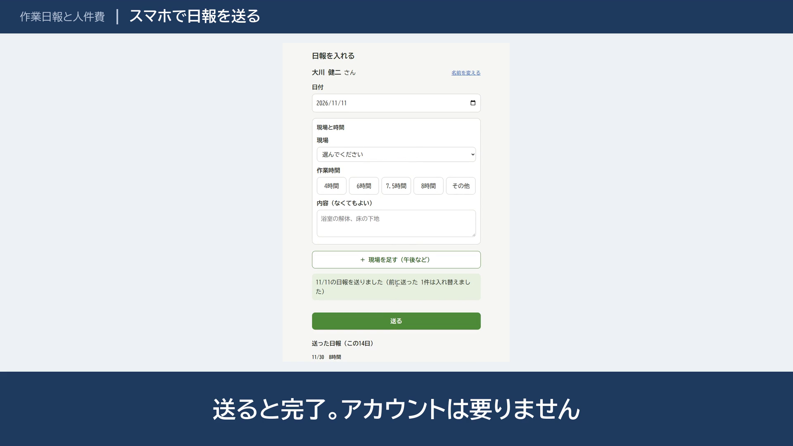

今日も、同じ作業を
くり返していませんか。
小さな会社によくある手作業を9つ選び、「今」と「仕組みにしたあと」を並べました。はじめの2つは、スマホでも使える WEB アプリです。データはすべて架空で、削減時間は仮の件数で出した試算です。
しくみ工房が作った LP の例です（データは架空です）。実績のページに戻る
小さな会社によくある手作業を9つ選び、「今」と「仕組みにしたあと」を並べました。はじめの2つは、スマホでも使える WEB アプリです。データはすべて架空で、削減時間は仮の件数で出した試算です。
C04 工程表とカレンダー
職人さんに、夕方1人ずつ電話で予定を伝えている

カレンダーに反映すると、前日にメールが自動で届く。工程表は PDF に
年約48時間・約9.6万円分年間の削減（試算）
C06 作業日報と人件費
紙の日報を集めて、現場ごとの人件費を手で足している

スマホで日報を送るだけ。送った日報は月のカレンダーで見て、直す・消すもできる。月末はボタンを押して確かめる（10分）。入れ忘れは次の朝にメールで知らせる
年約46時間・約9万円分年間の削減（試算）
C07 請求書の自動作成
月末に、売上の表から請求書を1通ずつ作っている

顧客ごとの請求書の PDF とメールの下書きができる。確認して送るだけ（5分）。請求した売上には番号が付き、二重の請求にならない
年約35時間・約7万円分年間の削減（試算）
X01 見積書・納品書・請求書（Excel）
見積書・納品書・請求書を、別々に打ち直している

見積から納品書、月ごとの請求書が、同じ Excel でつながる。税率ごとの合計と消費税（切り捨て）は自動
年約215時間・約43万円分年間の削減（試算）
ご相談は無料です。今の作業をうかがい、自動化できるところをご提案します。ランサーズまたはココナラのメッセージからお送りください。お返事は、平日は翌日まで、土日は月曜までにします。
ランサーズで相談するココナラで相談する